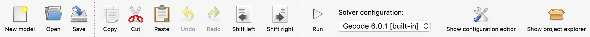
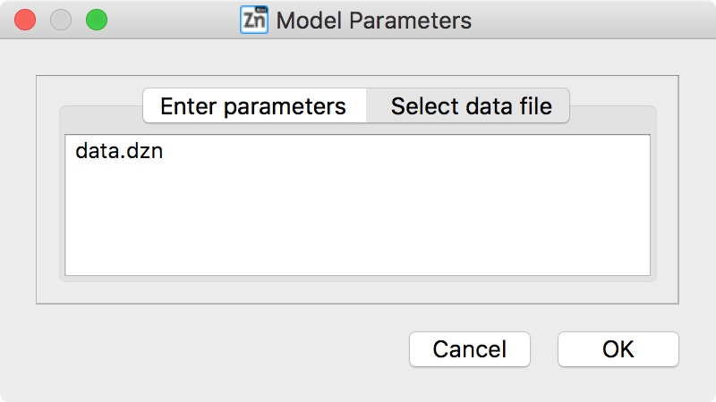

3.2. The MiniZinc IDE
The MiniZinc IDE lets you edit and run MiniZinc models. It requires a working installation of the MiniZinc tool chain (which is included when you download the bundled version of the IDE). For installation instructions, see Section 1.2. This document assumes that you have installed the IDE from the bundled binary distribution, which means that it will already be configured correctly when you start it for the first time. The configuration options are described in Section 3.2.5.
Section 1.3 contains an introduction to the absolute basics of working with the IDE. This document goes into a bit more detail.
3.2.1. Editing files
The basic editor provides the usual functionality of a simple text editor. You can edit MiniZinc models (file extension .mzn) and data files (.dzn). When you first open the MiniZinc IDE, you are presented with an empty Playground editor, which lets you quickly try out simple MiniZinc models (it does not have to be saved to a file before running a solver on it).
Each file will be opened in a separate tab. To switch between files, click on the tab, select the file from the Window menu, or use the Previous tab/Next tab options from the View menu.
When saving a file, make sure that you select the correct file type (represented by the file extension). Models should be saved as .mzn files, while data files should have a .dzn extension. This is important because the IDE will only let you invoke the solver on model files.
3.2.1.1. Editing functions
The Edit menu contains the usual functions for editing text files, such as undo/redo, copy/cut/paste, and find/replace. It also allows you to jump to a particular line number (Go to line), and to shift the currently selected text (or the current line if nothing is selected) right or left by two spaces. The (Un)comment option will turn the current selection (or current line) into comments, or remove the comment symbols if it is already commented.
3.2.1.2. Fonts and dark mode
You can select the font and font size in the View menu. We recommend to use a fixed-width font (the IDE should pick such a font by default).
Depending on your platform, the View menu also lets you activate “dark mode”, which switches the colour scheme to a dark background. On macOS 10.14 and later, the operating systems supports a global dark mode, and the MiniZinc IDE will follow that setting.
3.2.2. Configuring and Running a Solver
The MiniZinc IDE automatically detects which solvers are available to MiniZinc. You can select the solver to use from the solver selection drop-down menu next to the Run icon in the tool bar:
{kind=link}
3.2.2.1. Running a model
MiniZinc models can be compiled and run by clicking the Run icon, selecting Run from the MiniZinc menu, or using the keyboard shortcut Ctrl+R (Cmd+R on macOS). The IDE will use the currently selected solver for compiling and running the model.
Running a model will open the Output window, usually located at the bottom of the IDE’s main window. MiniZinc displays progress messages as well as any output received from the solver there. If compilation resulted in an error message, clicking on the error will jump to the corresponding location in the model or data file.
The current run can be aborted by clicking the Stop icon, selecting Stop from the MiniZinc menu, or using the keyboard shortcut Ctrl+E (Cmd+E on macOS).
If the selected model requires some parameters to be set before it can be run, the MiniZinc IDE will open a parameter dialog. It has two tabs. The left tab lets you enter the parameters manually:

The second tab lets you select one or several of the data files that are currently open:
{kind=link}
3.2.2.2. Solver configurations
Selecting one of the built-in solvers from the drop-down menu activates its default configuration. In order to change the solver’s behaviour, open the solver configuration editor by clicking on the icon in the tool bar, selecting Show configuration editor from the MiniZinc/Solver configurations menu, or using the keyboard shortcut Ctrl+Shift+C (Cmd+Shift+C on macOS).
{kind=link}
Fig. 3.2.1 The solver configuration window
Fig. 3.2.1 shows the configuration window. The first section (marked with a 1 in a red circle) contains a drop-down menu to select the solver configuration. In this case, a built-in configuration for the Gecode solver was selected. You can make this configuration the default (the MiniZinc IDE will remember this setting), you can reset all values to the defaults, and you can make a clone of the configuration. Cloning a configuration is useful if you want to be able to quickly switch between different sets of options. Solver configurations can be saved once cloned/modified as .mpc files to be reused later. This is done by selecting Save solver configuration from the *File menu. The concrete solver used is also shown in this section.
The Options section allows you configure common settings which can remain persistent as you switch between configurations. This behaviour can be switched off by unticking the Maintain these options across solver configurations checkbox. This area contains two subsections described below.
The Solving subsection contains a number of general options. You can set a time limit, after which the execution will be stopped. The behaviour selector controls which kinds of solutions a solver should produce. The “default behaviour” (marked with a 2) is to print all intermediate solutions for optimisation problems, and stop after the first found solution for satisfaction problems. To change this, you can select User-defined behavior instead (marked with a 3).
The Output subsection (marked with a 4) allows you to control what extra information, if any, the compiler/solver should produce. This includes verbosity options, statistics options and extra timing information where supported.
The Advanced Options section contains options for more fine-grained control of the compilation and solving of your instance. These options are less commonly used, and as such the settings are unique to each solver configuration. It contains three subsections described below.
The Compiling subsection (marked with a 5) controls different aspects of the compilation from MiniZinc to FlatZinc for the selected solver. The drop-down controls the optimisation level of the compiler, i.e., how much effort it should spend on creating the best possible FlatZinc representation for the given model. The input field below allows you to specify additional data (passed into the compilation as if it was part of a .dzn file).
The Solving subsection (marked with a 6) contains configuration options for the selected solver, such as the number of threads to use for solvers which support parallelism, the seed to use for random number generation, and whether or not to enable free search (i.e. permitting the solver to ignore search annotations). Only options that are supported by the solver will be available, others will be greyed out.
Finally, the Extra configuration parameters subsection allows you to enter any extra options supported by a solver, as well as custom ones where necessary. These options are passed to the minizinc command in the same manner as described in Section 3.1.5. The Add parameter button (marked with a 7) opens a drop-down presenting any known options supported by a solver (with a convenience option to add all of them), as well as an option to add a custom parameter. The values associated with each added parameter can be edited by double clicking on the corresponding Value cell in the table. Adding a custom parameter requires you to specify the corresponding command-line flag in the first column, the data-type in the second, and the value in the third. The Remove parameter button can be used to remove the currently highlighted parameters.
3.2.2.3. Automatic Solution Checking
MiniZinc can automatically run the output of a model through a solution checker, another MiniZinc model that verifies that the solution satisfies a given set of rules. This can be useful for teaching constraint modelling, if the solution checker is given to students. Another use case is to use a simple checker while working on a more complex model, to ensure that the complex model still meets the specification.
The default behaviour of the MiniZinc IDE is to run a solution checker if one is present. For a model abc.mzn, a solution checker must be called abc.mzc or abc.mzc.mzn. If a checker is present, the Run icon will turn into a Run + check icon instead. The output of the solution checker is displayed together with the normal solution output in the Output window.
You can disable solution checkers by deselecting the Check solutions option in the output tab of the preferences window.
You can find a detailed description of MiniZinc solution checkers in Automatic Solution Checking, Model Validation, and Benchmarking.
3.2.2.4. Compiling a model
It can sometimes be useful to look at the FlatZinc code generated by the MiniZinc compiler for a particular model. You can use the Compile option from the MiniZinc menu to compile the model without solving. The generated FlatZinc will be opened in a new tab. You can edit and save the FlatZinc to a file, and run it directly (without recompiling).
3.2.2.5. Profiling a model
MiniZinc can produce statistics about the translation of a model to FlatZinc, which can be helpful in order to better understand the behaviour of the model. In the IDE, this feature can be accessed from the MiniZinc menu: Select Profile compilation, which will run the compiler with the current settings (such as selected solver etc.) and output compilation statistics next to each line of code.
For the Magic Series puzzle from Listing 2.7.2, profiling using the Gurobi solver backend could produce the statistics shown in Fig. 3.2.2. The first column (“Cons”) represents the number of FlatZinc constraints generated from each line of code, the second column (“Vars”) the number of variables, and the third column (“Time”) the time it took to compile the line. In this example, for n=10, the constraint in lines 4 and 5 creates 100 variables (one 0/1 variable for each of the bool2int calls), and the constraints in lines 7 and 8 each result in a single FlatZinc constraint and no additional variables.
{kind=link}
Fig. 3.2.2 Profiling results for the Magic Series problem (n=10)
In addition to the simple statistics output, the IDE also ships an experimental integration of the CP-Profiler tool. This tool provides profiling information of the actual solving process. Since this requires integration with the backend solver, this is only available for a small number of solvers at the moment. See Section 3.4 for more details.
3.2.3. Working With Projects
Each main window of the MiniZinc IDE corresponds to a project, a collection of files and settings that belong together. A project can be saved to and loaded from a file.
You can open a new project by selecting the New project option from the File menu, or using the Ctrl+Shift+N keyboard shortcut (Cmd+Shift+N on macOS).
{kind=link}
Fig. 3.2.3 Project explorer
All the files that belong to the current project are shown in the Project explorer (see Fig. 3.2.3), which can be opened using the tool bar icon, or using the Show project explorer option in the View menu. The project explorer lets you run the model in the currently active tab with any of the data files by right-clicking on a .dzn file and selecting Run model with this data. Right-clicking any file presents a number of options: opening it, removing it from the project, renaming it, running it, and adding new files to the project.
A saved project contains the following pieces of information:
The names of all files in the project. These are stored as relative paths (relative to the project file).
Which files were open in tabs (and in which order) at the time the project was saved.
The active solver configuration.
The state of any cloned solver configuration.
The following will not be saved as part of the project:
The contents of the Output window.
The state of the built-in solver configurations.
3.2.4. Submitting Solutions to Online Courses
The MiniZinc IDE has built-in support for submitting solutions and models to online courses, including the Coursera courses that introduce modelling in MiniZinc:
The submission system is controlled by a file called _mooc, which is typically part of the projects that you can download for workshops and assignments. When a project contains this file, a new submission icon will appear in the tool bar, together with an option in the MiniZinc menu.
Clicking the icon (or selecting the menu option) opens the submission dialog (see Fig. 3.2.4). It lets you select the problems that you would like to run on your machine, after which the solutions will be sent to the online course auto-grading system. Some projects may also contain model submissions, which are not run on your machine, but are evaluated by the online auto-grader on new data that was not available to you for testing.
You will have to enter the assignment-specific login details. By clicking the Run and submit button, you start the solving process. When it finishes, the MiniZinc IDE will upload the solutions to the auto-grading platform.

Fig. 3.2.4 Submitting to Coursera
3.2.5. Configuration Options
The MiniZinc IDE can be configured through the Preferences dialog in the MiniZinc menu (on Windows and Linux) or the MiniZincIDE menu (on macOS), as shown in Fig. 3.2.5.
There are four tabs which allow configuration of different aspects of the IDE:
MiniZinc. Options for configuring compiler search paths. Shown in Fig. 3.2.6.
Solvers. Options for built-in and user solvers. Shown in Fig. 3.2.7.
Editing. Options for code editing and appearance. Shown in fig-ide-preferences-editing.
Output. Options for solution output. Shown in fig-ide-preferences-output.
{kind=link}
Fig. 3.2.5 The MiniZincIDE preferences window
3.2.5.1. Locating the MiniZinc installation
The most important configuration option is the path to the minizinc executable. In the example in Fig. 3.2.5, this field has been left empty, in which case minizinc is assumed to be on the standard search path (usually the PATH environment variable). Typically, in a bundled binary installation of MiniZinc, this field can therefore be left empty.
If you installed MiniZinc from sources, or want to switch between different versions of the compiler, you can add the path to the directory that contains the minizinc executable here. You can select a directory from a file dialog using the Select button, or enter it manually. Clicking the Check button will check that minizinc can in fact be run, and has the right version. The version of minizinc that was found is displayed below the path input field. Fig. 3.2.6 below shows an example where MiniZinc is located at /home/me/minizinc-2.6.0/bin.
You can have the MiniZinc IDE check once a day whether a new version of MiniZinc is available.
3.2.5.2. Adding Third-Party Solvers
Solvers which distribute a .msc solver configuration file (see Section 4.3.6) can be added to the MiniZinc IDE by adding the directory containing the solver configuration file to the Extra solver search paths as shown in Fig. 3.2.6.
{kind=link}
Fig. 3.2.6 Configuring MiniZinc search paths
The Solvers tab of the configuration dialog can be used to inspect the solvers that are currently available to MiniZinc, and to add new solvers which don’t have an existing solver configuration file to the system.
Configuring existing solvers
You can use the configuration dialog to set up defaults for the installed solvers. In the current version of the MiniZinc IDE, this is limited to configuring the CPLEX and Gurobi backends. The bundled binary version of MiniZinc comes with support for loading CPLEX and Gurobi as plugins, i.e., MiniZinc does not ship with the code for these solvers but can load them dynamically if they are installed.
For example, Fig. 3.2.7 shows a potential configuration for Gurobi. On Windows, the library is called gurobiXX.dll (in the same directory as the gurobi executable), and on Linux and macOS is it libgurobiXX.so (in the lib directory of your Gurobi installation), where XX stands for the version number of Gurobi.
If you select the CPLEX solver, a similar option appears (--cplex-dll). On Windows, the CPLEX library is called cplexXXXX.dll and typically found in same directory as the cplex executable. On Linux it is libcplexXXX.so, and on macOS libcplexXXXX.jnilib, where XXX and XXXX stand for the version number of CPLEX.
{kind=link}
Fig. 3.2.7 Configuring the Gurobi DLL path
Adding new solvers
The example in Fig. 3.2.8 shows a potential configuration for the or-tools solver, which was installed in /Users/me/or-tools.
{kind=link}
Fig. 3.2.8 Adding a new solver
Each solver needs to be given
a name;
a unique identifier (usually in reverse domain name notation);
a version string; and
the executable that can run FlatZinc.
In addition, you can specify the location of a solver-specific MiniZinc library (see Section 4.3.4 for details). If you leave this field empty, the MiniZinc standard library will be used. The path entered into this field should be an absolute path in the file system, without extra quoting, and without any command line arguments (such as -I).
Most solvers will require compilation and output processing, since they only deal with FlatZinc files. For these solvers, the Run with mzn2fzn and solns2out option must be selected. For solvers that can deal with MiniZinc models natively, this option can be deselected.
Some solvers open an independent application with its own graphical user interface. One such example is the Gecode (Gist) solver that comes with the bundled version of the IDE. For these solvers, select the Run solver detached from IDE option, so that the IDE does not wait for solver output.
Finally, you can select which command line flags are supported by the solver. This controls which options will be available in the solver configuration window.
Solver configurations that are edited or created through the IDE are saved in a configuration file in a standard location. These solvers are therefore available the next time the IDE is started, as well as through the minizinc command line tool.
3.2.5.3. Editing options
{kind=link}
The Editing tab contains options for the code editor, such as fonts, indentation, and theming.
3.2.5.4. Output options
{kind=link}
There are also a number of output-related options. The first tick box (Check solutions) enables checking as described in Section 3.2.2.3. The second tick box enables you to clear the Output window automatically every time you run a model. The third Compress solution output option is useful for problems that produce a lot (read: thousands) of solutions, which can slow down and clutter the output window. The compression works by printing just the number of solutions rather than the solutions themselves. For example, the following model would produce 1000 solutions when run with User-defined behavior and solution limit disabled:
var 1..1000: x;
solve satisfy;
When running with compression set to 100, MiniZinc will output the first 100 solutions, and then a sequence of output like this:
▶ [ 99 more solutions ]
x = 200;
----------
▶ [ 199 more solutions ]
x = 400;
----------
▶ [ 399 more solutions ]
x = 800;
----------
▶ [ 199 more solutions ]
x = 1000;
----------
==========
The number of solutions captured by one of the ... more solutions lines is doubled each time, in order to keep the overall output low. The last solution produced by the solver will always be printed (since, in the case of optimisation problems, the last solution is the best one found). The hidden solutions can be shown by clicking the ▶ symbol, but this may take some time where a large number of solutions have been truncated.